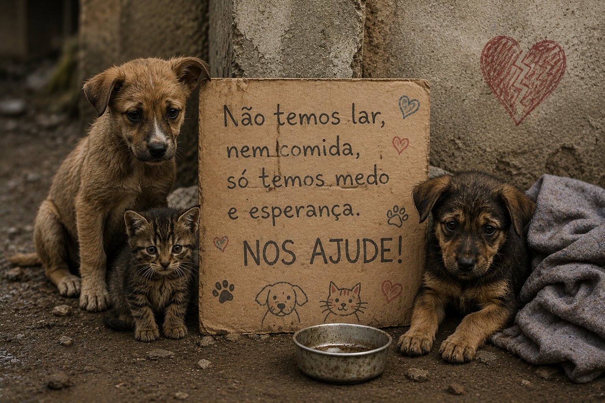
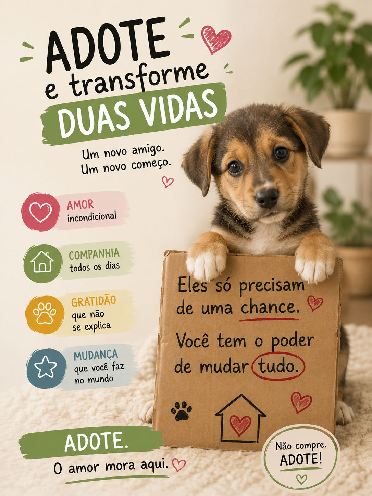

Milhões
Milhões de cães e gatos vivem abandonados no Brasil.
Milhões de cães e gatos enfrentam fome, frio, doenças e abandono todos os dias. Pequenas atitudes podem transformar essa realidade.
Descubra como ajudar
Muitas pessoas abandonam seus animais de estimação.
Alguns animais acabam morrendo sem comida, sem um lugar digno para ficar ou vítimas de maus tratos.
Aqueles animais que conseguem sobreviver acabam se reproduzindo, aumentando o número de animais nas ruas.
Milhões de cães e gatos vivem abandonados no Brasil.
A castração é uma das formas mais eficientes de reduzir o abandono.
Adotar transforma duas vidas: a do animal adotado e a sua com um novo amigo.
Dê um novo lar para quem precisa.
Evite ninhadas indesejadas.
Maus-tratos devem ser comunicados às autoridades.
Ração, medicamentos ou qualquer ajuda fazem diferença.

Ao adotar um animal você oferece amor, segurança e uma nova oportunidade.
Em troca, recebe amizade, carinho e gratidão por muitos anos.
Universidades frequentemente oferecem atendimento gratuito ou de baixo custo.
Diversas prefeituras promovem campanhas durante o ano.
Abrigos realizam adoção, acolhimento e cuidados veterinários.
Este site integra e complementa o trabalho de pesquisa "O Abandono dos Animais Domésticos e Seus Problemas", apresentado pelas alunas Lívia dos Santos Rodrigues e Julie Rebeca Ortiz dos Santos durante a Feira Multidisciplinar de 2026 do Colégio La Salle Esteio (RS).
Mais do que um projeto escolar, esta iniciativa convida crianças, jovens e suas famílias a refletirem sobre a importância da guarda responsável, da adoção e do cuidado com os animais.
Seu objetivo é ampliar o alcance da pesquisa realizada, levar informação, sensibilizar a comunidade e incentivar ações que contribuam para reduzir o abandono de animais.